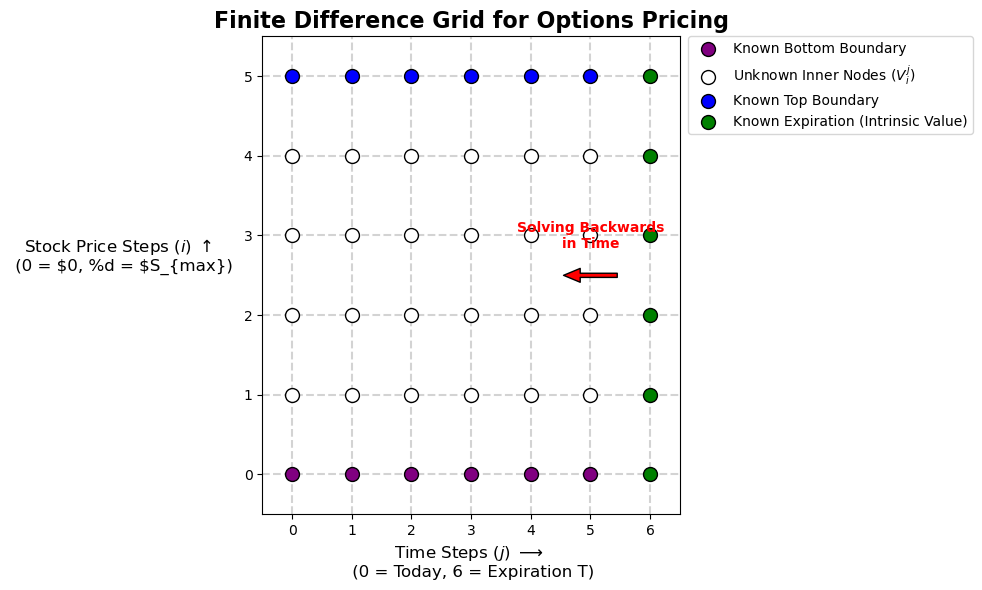

A step-by-step breakdown of finite difference methods for options pricing.
Author
Jordan Chong
Published
March 30, 2026
The Mathematical Engine of the Implicit Method: Step-by-Step
To solve the Black-Scholes model numerically, we have to translate continuous calculus into discrete algebra.
We start with the fundamental Black-Scholes Partial Differential Equation (PDE): \[ \frac{\partial V}{\partial t} + rS \frac{\partial V}{\partial S} + \frac{1}{2} \sigma^2 S^2 \frac{\partial^2 V}{\partial S^2} - rV = 0 \]
Our goal is to solve for \(V(S, t)\), which represents the fair price of the option at a specific stock price \(S\) and time \(t\).
Step 1: Setting up the Grid and Variables
Instead of continuous time and price, we chop the world into a finite grid.
Let the vertical axis be the Stock Price (\(S\)), broken into steps of size \(\Delta S\). We use the index \(i\) to denote our row (so \(S = i\Delta S\)).
Let the horizontal axis be Time (\(t\)), broken into steps of size \(\Delta t\). We use the index \(j\) to denote our column.
\(V_i^j\) represents the unknown price of the option today at stock price node \(i\) and time node \(j\).
\(V_i^{j+1}\) represents the known price of the option tomorrow (the future time step).
Because we only know the intrinsic value of the option at expiration, we must start at the right side of the grid and step backward to the left.
import matplotlib.pyplot as pltimport numpy as np# 1. Grid Dimensions for the plot (Keep it small for a clean diagram)N_time =6# Number of time steps (j)M_price =5# Number of stock price steps (i)# Create the figurefig, ax = plt.subplots(figsize=(10, 6))# 2. Draw the grid linesfor i inrange(M_price +1): ax.axhline(y=i, color='lightgray', linestyle='--', zorder=1)for j inrange(N_time +1): ax.axvline(x=j, color='lightgray', linestyle='--', zorder=1)# 3. Plot the nodesfor j inrange(N_time +1):for i inrange(M_price +1):# Condition 1: Expiration Payoff (The far right column)if j == N_time: ax.scatter(j, i, color='green', s=100, zorder=2, edgecolors='black', label='Known Expiration (Intrinsic Value)'if i==0else"")# Condition 2: Top Boundary (Max Stock Price)elif i == M_price: ax.scatter(j, i, color='blue', s=100, zorder=2, edgecolors='black', label='Known Top Boundary'if j==0else"")# Condition 3: Bottom Boundary (Zero Stock Price)elif i ==0: ax.scatter(j, i, color='purple', s=100, zorder=2, edgecolors='black', label='Known Bottom Boundary'if j==0else"")# Condition 4: Inner Nodes (The unknowns we are solving for)else: ax.scatter(j, i, color='white', s=100, zorder=2, edgecolors='black', label='Unknown Inner Nodes ($V_i^j$)'if i==1and j==0else"")# 4. Add an arrow to show the direction of time-steppingax.annotate('', xy=(N_time -1.5, M_price /2), xytext=(N_time -0.5, M_price /2), arrowprops=dict(facecolor='red', shrink=0.05, width=3, headwidth=10))ax.text(N_time -1, (M_price /2) +0.3, "Solving Backwards\nin Time", color='red', ha='center', va='bottom', fontweight='bold')# 5. Labels and Formattingax.set_title("Finite Difference Grid for Options Pricing", fontsize=16, fontweight='bold')ax.set_xlabel("Time Steps ($j$) $\\longrightarrow$ \n (0 = Today, %d = Expiration T)"% N_time, fontsize=12)ax.set_ylabel("Stock Price Steps ($i$) $\\uparrow$ \n (0 = \$0, %d = $S_{max})", fontsize=12, rotation=0, labelpad=88)# Set ticks to match our grid indicesax.set_xticks(np.arange(N_time +1))ax.set_yticks(np.arange(M_price +1))# Clean up axes limits so the dots aren't cut offax.set_xlim(-0.5, N_time +0.5)ax.set_ylim(-0.5, M_price +0.5)# Add a legend outside the plotax.legend(loc='upper left', bbox_to_anchor=(1.02, 1), borderaxespad=0.)plt.tight_layout()plt.show()

Step 2: The Finite Difference Approximations
We approximate the continuous derivatives from the PDE using the nodes around us on the grid:
First Space Derivative (Delta): \[ \frac{\partial V}{\partial S} \approx \frac{V_{i+1}^{j} - V_{i-1}^{j}}{2\Delta S} \]
Second Space Derivative (Gamma): \[ \frac{\partial^2 V}{\partial S^2} \approx \frac{V_{i+1}^{j} - 2V_{i}^{j} + V_{i-1}^{j}}{(\Delta S)^2} \]
CRITICAL NOTE FOR THE IMPLICIT METHOD: Notice that for the space derivatives (Delta and Gamma), we are using the unknown current time step \(j\). If we used the known future time step \(j+1\), it would be the Explicit method!
Step 3: Substituting into the Black-Scholes PDE
Now, we substitute our grid approximations directly into the Black-Scholes PDE. Remember that since our position on the price grid is \(S\), we replace \(S\) with \(i\Delta S\):
Step 4: Simplifying the Math (Canceling \(\Delta S\))
Let’s look closely at the space derivative terms. A beautiful mathematical convenience happens here: the step size of our grid (\(\Delta S\)) completely cancels itself out!
For the Delta term: \[ r (i\Delta S) \frac{V_{i+1}^{j} - V_{i-1}^{j}}{2\Delta S} \implies r i \left(\frac{\Delta S}{\Delta S}\right) \frac{V_{i+1}^{j} - V_{i-1}^{j}}{2} \implies \frac{1}{2} r i (V_{i+1}^{j} - V_{i-1}^{j}) \]
If we multiply the entire equation by \(\Delta t\) and group all the unknown \(j\) terms on the left side and the known \(j+1\) term on the right side, we get a clean linear equation for any inner node \(i\):
Where our coefficients are: \[ a_i = \frac{1}{2} \Delta t (\sigma^2 i^2 - r i) \]\[ b_i = 1 + \Delta t (\sigma^2 i^2 + r) \]\[ c_i = \frac{1}{2} \Delta t (\sigma^2 i^2 + r i) \]
Step 5: The Matrix Setup
Because solving for node \(i\) requires knowing the adjacent nodes \(i-1\) and \(i+1\) at the exact same unknown time step \(j\), we cannot solve them one by one. We have to solve the whole column of stock prices at once.
This forms a system of equations, which we express as a matrix multiplication: \(\mathbf{A} \mathbf{V}^j = \mathbf{V}^{j+1} + \mathbf{b}\).
Matrix \(\mathbf{A}\) is a “tridiagonal” matrix containing our coefficients. It looks like this:
The vector \(\mathbf{b}\) contains the known boundary conditions (the absolute top and bottom of our grid, which we calculate separately).
Step 6: Stepping Backwards
Here is the exact sequence of how the grid updates in our code:
Initialize the End: The loop starts at expiration (\(t = T\)). We calculate the intrinsic payoff of the option for every stock price node. This populates the far-right column of our grid, becoming our first known \(\mathbf{V}^{j+1}\).
Apply Boundaries: We evaluate the top and bottom boundary conditions for our current time step \(j\).
Set Up the Equation: We take our known \(\mathbf{V}^{j+1}\) and add those boundary adjustments to the top and bottom of the array to form the right side of our equation.
Solve the Matrix: We isolate our unknowns (\(\mathbf{V}^j\)) by multiplying both sides by the inverse of matrix \(\mathbf{A}\). In linear algebra, \(\mathbf{V}^j = \mathbf{A}^{-1} (\mathbf{V}^{j+1} + \mathbf{b})\). The code np.linalg.solve(A, B) computes this efficiently.
Update the Grid: We slot this newly calculated column \(\mathbf{V}^j\) into our grid. We then move one step left (backward in time), and this new column becomes the known “future” \(\mathbf{V}^{j+1}\) for the next iteration.
The grid fills up column by column, right to left, until we finally calculate the column for \(t = 0\) (today).
import numpy as npimport pandas as pd# 1. Define the Option and Market ParametersS_max =100# Maximum stock price on our gridK =50# Strike price of the Call OptionT =1.0# Time to maturity (1 year)r =0.05# Risk-free interest rate (5%)sigma =0.2# Volatility of the stock (20%)# 2. Define the Grid Parameters (Kept extremely small for visibility)M =5# Number of stock price stepsN =4# Number of time stepsdt = T / N # Size of each time step (0.25 years)dS = S_max / M # Size of each price step ($20)S_nodes = np.linspace(0, S_max, M +1)t_nodes = np.linspace(0, T, N +1)# 3. Build the Implicit Coefficient Matrix (A)A = np.zeros((M -1, M -1))for i inrange(1, M): idx = i -1 a_i =0.5* dt * (sigma**2* i**2- r * i) b_i =1+ dt * (sigma**2* i**2+ r) c_i =0.5* dt * (sigma**2* i**2+ r * i) A[idx, idx] = b_iif idx >0: A[idx, idx -1] =-a_iif idx < M -2: A[idx, idx +1] =-c_i# 4. Initialize the Option Price Grid (V)V = np.zeros((N +1, M +1))# Set the known boundary condition at Expiration (Intrinsic Value)V[N, :] = np.maximum(S_nodes - K, 0)# 5. Step backward through timefor j inrange(N -1, -1, -1):# Boundary Condition: If stock is $0, call is worthless V[j, 0] =0# Boundary Condition: If stock is at S_max, call tracks the stock minus discounted strike V[j, M] = S_max - K * np.exp(-r * (T - j * dt))# Extract known values from the future step B = V[j +1, 1:M].copy()# Calculate boundary coefficients for the edges of our inner grid a_1 =0.5* dt * (sigma**2* (1)**2- r * (1)) c_M_minus_1 =0.5* dt * (sigma**2* (M -1)**2+ r * (M -1))# Adjust B for the known boundary conditions B[0] += a_1 * V[j, 0] B[-1] += c_M_minus_1 * V[j, M]# Invert the matrix A and solve for current time step V[j, 1:M] = np.linalg.solve(A, B)# Display the final gridprint("Implicit Method: Option Price Grid")display(pd.DataFrame(V, columns=np.round(S_nodes, 2), index=np.round(t_nodes, 2)))
Implicit Method: Option Price Grid
0.0
20.0
40.0
60.0
80.0
100.0
0.00
0.0
0.036913
1.385906
13.203518
32.509676
52.438529
0.25
0.0
0.022152
1.029274
12.448007
31.885356
51.840279
0.50
0.0
0.011071
0.678585
11.664218
31.257710
51.234504
0.75
0.0
0.003686
0.335041
10.849308
30.628510
50.621110
1.00
0.0
0.000000
0.000000
10.000000
30.000000
50.000000
\[-a_i V_{i-1}^j + b_i V_i^j - c_i V_{i+1}^j = V_i^{j+1}\]Where the coefficients for a node \(i\) are:\[a_i = \frac{1}{2} \Delta t (\sigma^2 i^2 - r i)\]\[b_i = 1 + \Delta t (\sigma^2 i^2 + r)\]\[c_i = \frac{1}{2} \Delta t (\sigma^2 i^2 + r i)\]
2. The Explicit Method: Calculating the Present Directly from the Future
If the Implicit Method requires solving a massive system of simultaneous equations, you might be wondering: isn’t there an easier way?
Yes, there is. It is called the Explicit Method.
Instead of expressing the current time step as a complex web of unknowns, the Explicit Method expresses the current unknown option price directly as a simple weighted average of the future known option prices.
Step 1: The Tiny Shift in the Math
The entire difference between the Implicit and Explicit methods comes down to exactly when we evaluate our space derivatives (Delta and Gamma).
In the Implicit Method, we evaluated the space derivatives at the unknown current time step \(j\). In the Explicit Method, we evaluate them at the known future time step \(j+1\).
Here are our new approximations:
Time Derivative (Theta) - Remains the same: \[\frac{\partial V}{\partial t} \approx \frac{V_{i}^{j+1} - V_{i}^{j}}{\Delta t}\]
First Space Derivative (Delta) - Evaluated at j+1: \[\frac{\partial V}{\partial S} \approx \frac{V_{i+1}^{j+1} - V_{i-1}^{j+1}}{2\Delta S}\]
Second Space Derivative (Gamma) - Evaluated at j+1: \[\frac{\partial^2 V}{\partial S^2} \approx \frac{V_{i+1}^{j+1} - 2V_{i}^{j+1} + V_{i-1}^{j+1}}{(\Delta S)^2}\]
Step 2: Substituting into the Black-Scholes PDE
Let’s plug these new \(j+1\) approximations back into the Black-Scholes PDE:
(Note: We also evaluate the discounting term \(rV\) at \(j+1\) to keep everything on the right side of the timeline consistent).
Step 3: Rearranging the Equation
Just like before, the \(\Delta S\) terms beautifully cancel each other out. We multiply everything by \(\Delta t\) to clear the denominator.
But here is where the magic happens. Because \(V_i^j\) (the option price today) is the only term in the entire equation from time step \(j\), we can easily isolate it on the left side of the equals sign:
Look closely at that equation. To find the option price today, we simply multiply the three adjacent nodes from tomorrow by our coefficients and add them up. No matrix inversion required!
Our Explicit coefficients are: \[a_i = \frac{1}{2} \Delta t (\sigma^2 i^2 - r i)\]\[b_i = 1 - \Delta t (\sigma^2 i^2 + r)\]\[c_i = \frac{1}{2} \Delta t (\sigma^2 i^2 + r i)\]
(Notice the sign changes compared to the Implicit method! The \(b_i\) term now has a minus sign).
Step 4: The Matrix Format (A Simple Multiplication)
We still use a matrix to calculate the entire column of stock prices at once, but the operation is drastically simpler.
Instead of solving an inverse matrix equation \(\mathbf{A} \mathbf{V}^j = \mathbf{V}^{j+1}\), the Explicit method is a straightforward multiplication:
Matrix \(\mathbf{A}_{exp}\) is built using our new Explicit coefficients. We take our known future column \(\mathbf{V}^{j+1}\), multiply it by \(\mathbf{A}_{exp}\), add our known boundary conditions \(\mathbf{b}\), and we instantly have our current prices \(\mathbf{V}^j\).
The Catch: Why don’t we always use the Explicit Method?
If it’s so easy, why did we bother with the Implicit Method? The answer is Stability.
Look at the coefficient \(b_i\): \[b_i = 1 - \Delta t (\sigma^2 i^2 + r)\]
Because of that minus sign, if our time steps (\(\Delta t\)) are too large compared to our price steps, \(b_i\) will become a negative number. In the world of probability and differential equations, a negative weight causes the mathematical errors to compound and oscillate wildly. The grid will “blow up,” and your Python code will spit out option prices of infinity.
The Explicit Method is conditionally stable. It only works if you keep your \(\Delta t\) extremely small, which requires massive amounts of computing power.
The Implicit Method is unconditionally stable. It never blows up, no matter how big your time steps are.
# 1. Build the Explicit Coefficient Matrix (A_exp)A_exp = np.zeros((M -1, M -1))for i inrange(1, M): idx = i -1# Notice the signs are different from the Implicit method! a_i =0.5* dt * (sigma**2* i**2- r * i) b_i =1- dt * (sigma**2* i**2+ r) c_i =0.5* dt * (sigma**2* i**2+ r * i) A_exp[idx, idx] = b_iif idx >0: A_exp[idx, idx -1] = a_iif idx < M -2: A_exp[idx, idx +1] = c_i# 2. Initialize a new Option Price Grid for the Explicit methodV_exp = np.zeros((N +1, M +1))V_exp[N, :] = np.maximum(S_nodes - K, 0)# 3. Step backward through timefor j inrange(N -1, -1, -1): V_exp[j, 0] =0 V_exp[j, M] = S_max - K * np.exp(-r * (T - j * dt))# Extract the known future state V_future = V_exp[j +1, 1:M].copy()# Simple matrix multiplication! No inversion needed. V_current = np.dot(A_exp, V_future)# Add the boundary conditions back in a_1 =0.5* dt * (sigma**2* (1)**2- r * (1)) c_M_minus_1 =0.5* dt * (sigma**2* (M -1)**2+ r * (M -1)) V_current[0] += a_1 * V_exp[j, 0] V_current[-1] += c_M_minus_1 * V_exp[j, M]# Store the result V_exp[j, 1:M] = V_currentprint("Explicit Method: Option Price Grid")display(pd.DataFrame(V_exp, columns=np.round(S_nodes, 2), index=np.round(t_nodes, 2)))
Explicit Method: Option Price Grid
0.0
20.0
40.0
60.0
80.0
100.0
0.00
0.0
0.022117
1.363549
13.334321
32.718733
52.438529
0.25
0.0
0.011019
1.008503
12.551068
32.051213
51.840279
0.50
0.0
0.003656
0.661781
11.736564
31.374590
51.234504
0.75
0.0
0.000000
0.325000
10.887500
30.690217
50.621110
1.00
0.0
0.000000
0.000000
10.000000
30.000000
50.000000
3. The Crank-Nicolson Method: The Best of Both Worlds
In 1947, John Crank and Phyllis Nicolson made a brilliant mathematical observation.
If the Implicit Method is unconditionally stable but evaluates everything at the unknown time step \(j\), and the Explicit Method evaluates everything at the known future time step \(j+1\) but is prone to blowing up… what if we just average them?
By centering our mathematical approximation exactly halfway between today (\(j\)) and tomorrow (\(j+1\)), the error terms magically cancel each other out. This gives us a method that is both unconditionally stable (like Implicit) and highly accurate (converging to the true price much faster than either of the other two methods).
Step 1: Averaging the Approximations
Instead of choosing between time step \(j\) or \(j+1\) for our space derivatives, we take a literal 50/50 average of the two:
Time Derivative (Theta) - Centered at \(j + 1/2\): \[\frac{\partial V}{\partial t} \approx \frac{V_{i}^{j+1} - V_{i}^{j}}{\Delta t}\]
First Space Derivative (Delta) - Average of \(j\) and \(j+1\): \[\frac{\partial V}{\partial S} \approx \frac{1}{2} \left[ \frac{V_{i+1}^{j} - V_{i-1}^{j}}{2\Delta S} + \frac{V_{i+1}^{j+1} - V_{i-1}^{j+1}}{2\Delta S} \right]\]
Second Space Derivative (Gamma) - Average of \(j\) and \(j+1\): \[\frac{\partial^2 V}{\partial S^2} \approx \frac{1}{2} \left[ \frac{V_{i+1}^{j} - 2V_{i}^{j} + V_{i-1}^{j}}{(\Delta S)^2} + \frac{V_{i+1}^{j+1} - 2V_{i}^{j+1} + V_{i-1}^{j+1}}{(\Delta S)^2} \right]\]
Step 2: The Matrix Equation
When we substitute these averages into the Black-Scholes PDE and cancel out our \(\Delta S\) denominators just like before, we end up with an equation that has unknown \(j\) terms on one side, and known \(j+1\) terms on the other.
Because the Crank-Nicolson method uses a 50/50 split, it turns out we can just take our exact Implicit and Explicit matrices, cut their \(\Delta t\) scaling in half, and set them equal to each other!
The matrix equation looks like this: \[\mathbf{A}_{CN\_Implicit} \mathbf{V}^j = \mathbf{A}_{CN\_Explicit} \mathbf{V}^{j+1} + \mathbf{b}\]
To solve for our option prices today (\(\mathbf{V}^j\)), we: 1. Multiply our known future column \(\mathbf{V}^{j+1}\) by the Explicit-style matrix. 2. Add our boundary conditions \(\mathbf{b}\). 3. Invert the Implicit-style matrix and multiply it across to isolate \(\mathbf{V}^j\).
It is literally performing an Explicit step followed by an Implicit solve!
Here are our new coefficients (notice the \(1/4\) because of the \(\Delta t / 2\) and the \(1/2\) from the PDE): \[a_i = \frac{1}{4} \Delta t (\sigma^2 i^2 - r i)\]\[b_i = \frac{1}{2} \Delta t (\sigma^2 i^2 + r)\]\[c_i = \frac{1}{4} \Delta t (\sigma^2 i^2 + r i)\]
# 1. Initialize the Left (Implicit-style) and Right (Explicit-style) MatricesA_LHS = np.zeros((M -1, M -1))A_RHS = np.zeros((M -1, M -1))for i inrange(1, M): idx = i -1# Crank-Nicolson coefficients (notice the 0.25 and 0.5 multipliers) a_i =0.25* dt * (sigma**2* i**2- r * i) b_i =0.5* dt * (sigma**2* i**2+ r) c_i =0.25* dt * (sigma**2* i**2+ r * i)# Left Hand Side (Implicit: we will invert this) A_LHS[idx, idx] =1+ b_iif idx >0: A_LHS[idx, idx -1] =-a_iif idx < M -2: A_LHS[idx, idx +1] =-c_i# Right Hand Side (Explicit: we will multiply by this) A_RHS[idx, idx] =1- b_iif idx >0: A_RHS[idx, idx -1] = a_iif idx < M -2: A_RHS[idx, idx +1] = c_i# 2. Initialize the GridV_CN = np.zeros((N +1, M +1))V_CN[N, :] = np.maximum(S_nodes - K, 0)# 3. Step Backward Through Timefor j inrange(N -1, -1, -1):# Boundary Conditions V_CN[j, 0] =0 V_CN[j, M] = S_max - K * np.exp(-r * (T - j * dt))# Extract the known future state V_future = V_CN[j +1, 1:M].copy()# Step 1: Multiply the future state by the RHS matrix (The "Explicit" part) B = np.dot(A_RHS, V_future)# Step 2: Add boundary conditions (Averaging both j and j+1 boundaries) a_1 =0.25* dt * (sigma**2* (1)**2- r * (1)) c_M_minus_1 =0.25* dt * (sigma**2* (M -1)**2+ r * (M -1)) B[0] += a_1 * (V_CN[j, 0] + V_CN[j +1, 0]) B[-1] += c_M_minus_1 * (V_CN[j, M] + V_CN[j +1, M])# Step 3: Solve the system (The "Implicit" part) V_CN[j, 1:M] = np.linalg.solve(A_LHS, B)# Display the final Crank-Nicolson Gridprint("Crank-Nicolson Method: Option Price Grid")display(pd.DataFrame(V_CN, columns=np.round(S_nodes, 2), index=np.round(t_nodes, 2)))